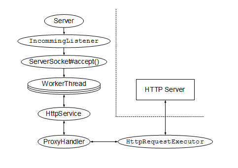

前回・前々回のエントリーとJavaでSSLSocket関連のお勉強をしてきましたが、そもそもの目的はBurpSuiteなどのHTTP/HTTPS両対応のJavaのProxyが、どうやってHTTPSのProxyを実現しているかの調査でした。基本的にはHTTPSプロキシを設定されたUser-Agentは、最初にCONNECTメソッドで本来のホスト名とポート番号をProxyに伝え、Proxyは以降、HTTPではなくTCPレベルでUser-Agentと実際のサーバとの間のパケットの中継のみを行います。したがってSSL/TLSのパケットの中身には触れません。一方で、BurpSuiteやDoormanなどはSSL/TLSのパケットの中身についても読み書きが出来ます。さらにBurpSuiteなどは接続先に応じて証明書をその場で生成することが可能で、共通のPortSwiggerのCA証明書で署名された証明書がUser-Agentには提示されます。
ProxyがSSL/TLSの内容について読み書きする方式は、少なくとも2種類の実装方式があるようです。
- 内部でMITMのSSL/TLSサーバを立ち上げ、そこに中継するタイプ。(jumperz.netのDoormanがこのタイプ)
- SSLEngine(JDK 1.5以降)を使ってProxy自身がハンドシェイクからSSL/TLSパケットのwrap()/unwrap()を行うタイプ。
今回はMITMのSSL/TLSサーバを立ち上げ、中継するタイプを作れるか実験してみました。HTTPサーバ・クライアントの実装やHTTPメッセージの処理については Apache HttpComponents の HttpCore を使って手抜きしました。さすがにソケット入出力の調整やHTTPメッセージの処理まで、ゼロからコーディングする体力は無いです・・・。
- Apache HttpComponents
- 前回・前々回のエントリー：
- ソースコード
- 実験用のHTTP/HTTPSサーバを組み立てる
- まずHTTP Proxyを作ってみる。
- HTTPS Proxyを組み立ててみる（HTTPSは中継するだけ）
- HTTPS Proxyを組み立ててみる（HTTPSの中にも触れる）
- curlでの実験
ソースコード
ソースコードは以下のzipを参照してください。HttpCoreのjarファイルについては除外し、.javaとKeyStoreファイルのみにしています。適当なEclipseプロジェクトに展開し、HttpCore 4.1.4 (GA) をDLしてjarファイルを追加してください。
./../images/https_proxy_exercise/https_proxy_exercise.zip
※「動けばいいや」で作ってますので、クラス構成とかエラー処理とか色々ヒドイ作りになってます。HttpCore付属のサンプルを適当に切り貼りしたから・・・。
実験用のHTTP/HTTPSサーバを組み立てる
まず実験用のHTTP/HTTPSサーバを組み立ててみます。HttpCoreについてくるサンプルコードの、ElementalHttpServer を参考に、クラスを分割したりしてます。
- exercise.hello. 以下のクラス：
- Server … main()定義、RequestListenerとTlsRequestListenerを起動するだけのクラス
- RequestListener … HTTP処理の準備とServerSocketの作成 + accept()
- TlsRequestListener … HTTP処理の準備とSSLServerSocketの作成 + accept()
- WorkerThread … accept()後の各クライアントとのソケット処理スレッド。
- 実際の入出力処理とHandlerの呼び出しは、HttpServiceクラスのインスタンスが処理します。ここでのWorkerThreadは単にHttpService#handleRequest()を繰り返し呼び出すだけの容れ物になっています。
- HelloHandler … ダミーのHTMLを返すハンドラ。
あまり複雑な構成にはなっていませんが、一応図にすると以下の様な構成になっています。TLSでは、異なっているのはSSLServerSocketを用意するところだけですので、accept()後のソケット処理とHTTPメッセージの処理についてはWorkerThreadとHelloHandlerを使いまわしています。
まずHTTP Proxyを作ってみる。
HttpCoreについてくるサンプルコードの、ElementalReverseProxy を参考に・・・してはいるんですが、リバースプロキシとはやはり性質が違うため、いろいろ試行錯誤が必要になってしまいました。サンプルコード中のはHTTPS Proxyの機能も混ざってはいますが、HTTP Proxyについての機能に絞れば以下のクラスで実装しています。
- exercise.proxy1. 以下のクラス：
- Server … main()定義、IncommingListenerを起動するだけのクラス
- IncommingListener … HTTP処理の準備とServerSocketの作成 + accept()
- ProxyWorker … accept()後の各クライアントとのソケット処理スレッド。
- HTTP Proxyの機能だけに絞れば、実験用サーバのWorkerThreadと殆ど一緒です。
- ProxyHandler … Proxy機能の実装。HttpRequestExecutorを使って実際のサーバと通信した結果をresponseに格納します。
図にすると以下の様な構成になっています。

HTTP Proxyの中心であるProxyHandlerについて簡単にソースコードコメントで解説します。
public class ProxyHandler implements HttpRequestHandler { private final HttpProcessor httpproc; private final HttpRequestExecutor httpexecutor; private final HttpParams params; public ProxyHandler() { // Set up HTTP protocol processor for outgoing connections this.httpproc = new ImmutableHttpProcessor(/* ... */); // Set up outgoing request executor this.httpexecutor = new HttpRequestExecutor(); this.params = new SyncBasicHttpParams(); this.params.setIntParameter(/* … */); } @Override public void handle( final HttpRequest request, final HttpResponse response, final HttpContext context) throws HttpException, IOException { // Proxyを使った "http://hostname(:port)/path" 形式からホスト名と // ポート番号と実際のURL Pathを取り出します。 String incommingUrlStr = request.getRequestLine().getUri(); URL incommingUrl = null; try { incommingUrl = new URL(incommingUrlStr); } catch (MalformedURLException e) { e.printStackTrace(); System.err.println("ignore illegal url : " + incommingUrlStr + "]"); return; } String realHost = incommingUrl.getHost(); int realPort = incommingUrl.getPort(); if (-1 == realPort) { realPort = 80; } String actualRequestPath = incommingUrl.getFile(); // 実際のサーバに向けたクライアント用Socketを作成し、 // DefaultHttpClientConnectionを使ってHTTPパラメータを設定します。 Socket outsocket = new Socket(realHost, realPort); DefaultHttpClientConnection outconn = new DefaultHttpClientConnection(); outconn.bind(outsocket, this.params); // この間にProxy関連のリクエストヘッダを除去しています。 // 実際のリクエストURL Pathを使ってリクエストヘッダを組み立てます。 HttpRequest targetRequest = new BasicHttpRequest( request.getRequestLine().getMethod(), actualRequestPath, request.getRequestLine().getProtocolVersion()); targetRequest.setHeaders(request.getAllHeaders()); // 実際のHTTPサーバと通信します。 HttpResponse targetResponse = this.httpexecutor.execute(targetRequest, outconn, context); // レスポンスBODYを取り出します。 HttpEntity entity = targetResponse.getEntity(); System.out.println(EntityUtils.getContentMimeType(entity)); // 今回は実際のHTTPサーバとは毎回切断しますので、切断する前に、 // レスポンスBODYを全て取り出しておく必要があります。 // これを忘れると、最終的にUser-Agentに返すレスポンスBODYを作るときに、 // すでに実際のHTTPサーバとの接続は閉じられているためBODYが読めずに例外となります。 byte[] responseBody = EntityUtils.toByteArray(entity); EntityUtils.consume(entity); // これは要らないかも？ this.httpexecutor.postProcess(response, this.httpproc, context); // Proxy関連のResponse Headerの除去と、最終的なResponseの組立 response.setStatusLine(targetResponse.getStatusLine()); response.setHeaders(targetResponse.getAllHeaders()); response.setEntity(new ByteArrayEntity(responseBody)); try { // 今回は毎回実際のHTTPサーバとの接続は切断します。 outsocket.close(); } catch (Exception e) {} } }
つまづいた点：
- HttpCoreのサンプルはリバースプロキシのため、最初に接続先のサーバとのSocketを作成していた。こちらは通常のProxyなので、User-Agentのリクエストから接続先のSocketを作成する必要があったため、その辺りを色々組み替える必要があった。
- 最初、EntityUtils.toByteArray()で読みだすことを行わずに、そのまま最終的なresponseにentityを渡していた。すると最終的なresponseを返す段階になってSocketはすでに閉じられています〜という趣旨の例外が発声した。暫くの間原因が分からなかったが、ようやく、最終的なresponseを返す段階になってStreamを読み出そうとするが、その時点ではすでに実際のHTTPサーバとのSocketは閉じられていたのでそれが原因とわかり、閉じる前に一旦メモリ上に読みだして(EntityUtisl.toByteArray())おくように変更した。
- HttpCoreのサンプルはHttpService, HttpParams, HttpContext, HandlerなどなどがIncommingListenerに当たる上位クラスで全て生成され、Constructorを経由して多段に渡される構造になっていたため、最初、各クラスが本当に必要としているクラスとインスタンスが何なのかさっぱり分からなかった。
- HttpServiceやHandlerのインスタンスはListenerレベルで1インスタンスずつ作成し、各Workerで共有している。HttpServiceについては関連するオブジェクト(=コンストラクタに渡す各パラメータ類)がスレッドセーフになっていれば問題ない（「スレッドセーフであること」を保証するのが大変・・・）。Handlerについても同様で、handle()中でHandler自身のinstanceの状態が変わらないように注意していれば基本的には問題ない・・・はず。一応サンプルがそのようになっていて、ひとつのHttpServiceやHandlerインスタンスが複数スレッドから同時に呼ばれるようになっているので、多分大丈夫・・・だろうなーと。というかそのことを理解するまでにまた一手間かかった。
HTTPS Proxyを組み立ててみる（HTTPSは中継するだけ）
原理としては、CONNECTメソッドをHTTPで受付たら、以降はCONNECTメソッドで指定されたサーバとひたすらTCPパケットを中継するだけのモードに切り替えます。先に図で示すと、今回のサンプルではこんな構成にしました。
クラスの紹介は省略し、ポイントとなるソースコードを抜粋で紹介します。
まずProxyHandlerではCONNECTメソッドの場合に接続先サーバのホスト名とポート番号を取り出し、"switch_to_https" をONにします。
@Override public void handle( final HttpRequest request, final HttpResponse response, final HttpContext context) throws HttpException, IOException { String requestMethod = request.getRequestLine().getMethod(); if ("CONNECT".equals(requestMethod)) { // ひとまず 200 OKを返す準備 response.setStatusCode(HttpStatus.SC_OK); response.setReasonPhrase("Connection established"); // HttpContextの switch_to_https (このサンプルが独自に用意)をONにします。 context.setAttribute("switch_to_https", true); // "Host"ヘッダーを取り出し、ホスト名とポート番号を取り出します。 Header[] headers = request.getHeaders("Host"); Header hostHeader = headers[0]; String hostValue = hostHeader.getValue(); System.out.println("HTTPS Host: " + hostValue); int colon = hostValue.indexOf(':'); // HttpContextにホスト名とポート番号を設定します。 if (-1 == colon) { context.setAttribute("https.host", hostValue); context.setAttribute("https.port", 443); } else { context.setAttribute("https.host", hostValue.substring(0, colon)); int port = 443; try { String port_s = hostValue.substring(colon + 1); port = Integer.parseInt(port_s); } catch (Exception ignore) { port = 443; } context.setAttribute("https.port", port); } return; } /* … */
なおHttpContextの状態を変化させていますが、こちらはあくまでもhandleメソッドの引数であり、元を辿ればスレッドごとにProxyWorker内でnewされているので、この範囲ではスレッドセーフであると考えられます。
CONNECTメソッドの結果を受けて、TCP中継モードに切り替えるのはProxyWorkerの役目となります。
public void run() { System.out.println("New connection thread"); HttpContext context = new BasicHttpContext(null); // HTTPS中継モード関連パラメタの初期化 boolean switchToHttps = false; context.setAttribute("switch_to_https", switchToHttps); context.setAttribute("https.host", ""); context.setAttribute("https.port", -1); try { while (!Thread.interrupted() && inconn.isOpen()) { switchToHttps = (Boolean)context.getAttribute("switch_to_https"); if (switchToHttps) { // CONNECTメソッドを受けて、HttpService用のループを抜ける。 System.out.println("Switching HTTPS Tunneling mode..."); break; } else { System.out.println("handleRequest start"); this.httpservice.handleRequest(this.inconn, context); // HTTPS切り替えの取得（最新の値を取得） switchToHttps = (Boolean)context.getAttribute("switch_to_https"); if (!switchToHttps) { // HTTPSでなければclose()により強制flush // (これを入れないとcurlでHTTP Proxyのレスポンスが取得できなかった) this.inconn.close(); } System.out.println("handleRequest end"); } } if (switchToHttps) { // HTTPS中継モードで接続先のホスト名とポート番号を取得 String targetHost = (String)context.getAttribute("https.host"); int targetPort = (Integer)context.getAttribute("https.port"); Socket targetSocket = null; if ("localhost".equals(targetHost) && 8081 == targetPort) { // redirect to TLS relay server // ここは後述 targetSocket = new Socket("localhost", 8889); } else { // 中身を覗かないHTTPS中継モードはこちら。 targetSocket = new Socket(targetHost, targetPort); } // 中継スレッドの作成とstart() Thread in2target = new TcpRelayWorker("in2target", insocket, targetSocket); in2target.setDaemon(true); in2target.start(); Thread target2in = new TcpRelayWorker("target2in", targetSocket, insocket); target2in.setDaemon(true); target2in.start(); }
もう一点、今回のサンプルの都合上重要なポイントがあります。clientはCONNECTメソッドの後に、そのまま同じTCPセッションを使ってSSL/TLSのハンドシェイクを始めます。ということは、clientとの接続をCONNECTメソッドの後も持続させる必要があります。
しかし、HttpServiceのhandleRequest()メソッドの中では、最後にKeep-Aliveを律儀にチェックして解釈し、Keep-AliveでなければclientとのSocketのclose処理を行なっています。今回はHTTPヘッダを超手抜きでいい加減に組んでいるため、CONNECTに対する200レスポンスがKeep-Aliveでないと解釈されcloseされてしまいます。
そこで AlwaysConnectionReuseStrategy というクラスを独自に用意し、常に「これはKeep-Aliveなのでcloseしないでね」とするようにしています。HttpServiceのインスタンスを作成している、IncommingListenerの以下の箇所になります。
// Set up the HTTP service this.httpService = new HttpService( inhttpproc, // new DefaultConnectionReuseStrategy(), // -> new AlwaysConnectionReuseStrategy(), new DefaultHttpResponseFactory(), reqistry, this.params);
その他つまづいた点：
- やっぱりHttpService#handleRequest()の中でclientとの接続をclose()されていることに気づくまでに時間がかかった。何度も何度も動作確認してみて、どうしてもアプリ側のコードだけではTCP中継モードに切り替わった時点ですでにclientとのSocketがcloseされてしまう原因が分からなくて、HttpCoreのソースコードを読んでようやく理解した。一般的なアプリケーションであればそれくらい「気を利かせて」くれたほうが便利なのだろうけど、Proxyみたいにもう少し低レイヤーを触るアプリの場合は余計なお世話になっちゃってる。
- TCPを中継するのに、NIO無しでは2スレッド必要になるのに気が付かず、だいぶ長い時間1スレッドでRead/Write x 2 してたが、どうしても片方のReadで止まってしまい（当たり前の話）、ようやく「あ、2スレッド必要か」と気づいた次第。
- NIO有りなら1スレッドでいけるかな？でも出来たとしてもかなり読みづらいコードになりそう。
- 最初、this.inconn.close()をhandleRequest()の後に入れてなかった。それだとcurlで確認した時、今度は強制的にcloseなしになったので、出力がflushされないのか？curlの方にレスポンスが表示されなかった。そのため、とりあえずHTTPS切り替えが無ければ強制的にcloseして出力をflushさせることに。
HTTPS Proxyを組み立ててみる（HTTPSの中にも触れる）
いよいよBurpSuiteやDoormanがやっているように、HTTPSの中にもアクセスできるHTTPS Proxyを組み立ててみます。ちなみに今回のサンプルの実装はDoormanのソースをヒントにしています。BurpSuiteについては同じ仕組なのか、それとも別方式なのかは不明。
基本的な考え方としては、TCP中継モードに入るところは同じで、ただし中継先がアプリが用意したHTTPSサーバになります。このHTTPSサーバの中で実際の接続先HTTPSサーバにProxyします。アプリが用意したHTTPSサーバは事実上のMITM Proxyとなり、HTTPSメッセージの中にアクセスすることが可能となります。今回のサンプルでは以下の図のような構成にしました。
TlsRequestListenerとTlsWorkerについては、実験用のHTTP/HTTPSサーバを組み立てた時のTlsRequestListenerとWorkerThreadの使い回しになります。注意が必要なのは次の2点です。
- 内部のMITM Proxyは本来なら実際の接続先ごとにFactoryやManagerなどで管理すべきだが、今回はそこまで組まず、実験用に組み立てた localhost:8081 のHTTPSサーバ専用としている。
- 実用レベルを考えるなら接続先ごとに証明書を動的に生成してそれを提示するようにすべきだが、今回はそこまで組んでいない。
- TlsHandlerについては、接続先がInvalidなサーバ証明書を提示してきてもスルーするように組み立てています。特に今回は、実験用に組み立てたHTTPSサーバに接続することを最初から前提としていますので、自己署名の証明書をスルーする必要があることが自明です。
TlsHandlerは以下のような作りにしました。
public class TlsHandler implements HttpRequestHandler { // ... // サーバ証明書の検証をスルーするためのSSLContextとSSLSocketFactory protected SSLContext sslContext; protected SSLSocketFactory sslSocketFactory; public TlsHandler(String _targetHost, int _targetPort) { try { // サーバ証明書の検証をスルーするための専用のTrustManagerの準備 this.sslContext = SSLContext.getInstance("TLSv1"); TrustManager tm = new X509TrustManager() { public void checkClientTrusted(X509Certificate[] chain, String authType) throws CertificateException { } public void checkServerTrusted(X509Certificate[] chain, String authType) throws CertificateException { } public X509Certificate[] getAcceptedIssuers() { return null; } }; this.sslContext.init(null, new TrustManager[] { tm }, null); // サーバ証明書の検証をスルーする設定のSSLSocketFactoryの生成 this.sslSocketFactory = sslContext.getSocketFactory(); } catch (Exception e) { e.printStackTrace(); } } @Override public void handle( final HttpRequest request, final HttpResponse response, final HttpContext context) throws HttpException, IOException { // サーバ証明書の検証をスルーするSSLSocketFactoryでSocket生成 Socket outsocket = this.sslSocketFactory.createSocket(this.targetHost, this.targetPort); DefaultHttpClientConnection outconn = new DefaultHttpClientConnection(); outconn.bind(outsocket, this.params); System.out.println("Outgoing connection to " + outsocket.getInetAddress());
実際の接続先については、TlsRequestListenerのコンストラクタに渡した値が、TlsHandlerまで渡されるようにしています。
今回はServerクラスで予めTlsRequestListenerのスレッドを起動してしまいます。
Server.java:
public class Server { public static void main(String[] args) throws Exception { Thread t = new IncommingListener(8888); t.setDaemon(false); t.start(); Thread t2 = new TlsRequestListener(8889, "localhost", 8081); t2.setDaemon(true); t2.start(); } }
ProxyHandlerでは以下の箇所で、localhost:8081 への接続についてのみここまでで準備してきたTlsRequestListenerを通すように分岐させています。
if (switchToHttps) { // ... if ("localhost".equals(targetHost) && 8081 == targetPort) { // 内部のMITM Proxy(TlsRequestListener)に接続 targetSocket = new Socket("localhost", 8889); } else {
つまづいた所：
- SSLSocketFacotryは、"javax.net.ssl.SSLSocketFactory" になります。"org.apache.http.conn.ssl.SSLSocketFactory"はHttpClientを活用した時に使います。今回はHttpCoreのみで、Socketの生成についてはHttpCoreは関与しませんので、JREが提供するjavax.net.ssl.SSLSocketFactoryからのSocket生成になります。
- HttpsURLConnectionやHttpClientは使いませんので、HostnameVerifierの設定は不要です。ホスト名の検証を行う箇所は今回のサンプルの範囲ではアプリ独自に実装する範囲であり、思いっきりスルーしてます。
curlでの実験
最初に実験用のHTTP/HTTPSサーバを起動します。ポート番号はHTTPが8080, HTTPSが8081でハードコードしています。
以下のcurlコマンドで確認できます。
HTTP: $ curl http://localhost:8080/ HTTPS: サーバ証明書の検証をスキップするため "-k" オプションを指定 $ curl -k https://localhost:8081/
続いてHTTP/HTTPS Proxyを起動します。ポート番号は8888での待受にハードコードしています。"-x" でProxyのホスト名とポート番号を指定します。
HTTP: $ curl -x localhost:8888 http://localhost:8080/ HTTPS: $ curl -k -x localhost:8888 https://localhost:8081/
SSLEngineとか、証明書の生成とかはまた後日、体力と気力のあるときに隙を見て実装してみます・・・。
今回はHttpCoreを使ってみたのですが、そもそもHttpCoreの概念、コンセプトの理解（というか復習。以前も軽く触ったことがあったので。）から始まったのが辛かったとです。
しかも素直にServerを組み分けじゃなくて、ProxyとかHTTPSとのつなぎ込みとかを行ったので、Socketなど低レイヤーの操作との折り合いをつける・・・というか、まずHttpCoreでその辺をどうしてるのか？とかその辺からだったのです。
ちょっとギャップが大きかったかも・・・。とはいえHTTPメッセージの処理と、ソケット入出力操作の組み合わせについてゼロからコーディングする気力も無かったのでこんなもんでしょうか。
というか図を描くのに5時間以上かかってます。図は・・・本当、読み手の立場から言えばあると助かるんですが、書き手の立場では非常に手間がかかるんですよね・・・。
あと図を描くのもMacBookAirで試してみたのですが(LibreOfficeのDraw使ってます)、タッチパッドだけだとさすがに辛い。範囲選択とか細かい部品のポイントとか繰り返してると、やっぱりマウスが無いと辛いですわ～。MagicMouse欲しくなっちゃいました。